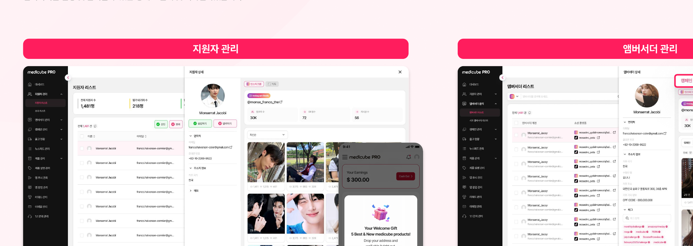

Output · 핵심 사용자 니즈 기반 UXUI 설계


캠페인 생성부터 성과 요약까지, 한 화면 흐름으로
핵심 사용자인 '마케팅팀' 니즈에 맞춰 캠페인 유형별로 쉽고 빠르게 캠페인을 생성할 수 있도록 설계했고, 지원자 리스트를 쉽게 선정하고 콘텐츠 리뷰 및 성과까지 빠르게 확인할 수 있도록 디자인했습니다.
신규 캠페인 생성 · STEP1~2
지원자 관리 · 앰버서더 관리

지원자 관리 화면에서 앰버서더 '승인' 시 앱의 모든 화면에 접근 권한이 주어지며, 캠페인에 참여할 수 있는 자격이 부여됩니다. 승인된 지원자는 앰버서더 관리 화면에서 기본 정보를 확인할 수 있으며, 캠페인 참여 이력 및 제품 발송 내역 등 기타 히스토리를 확인할 수 있습니다.
콘텐츠 리뷰
앰버서더가 제출한 콘텐츠를 그리드에서 한눈에 확인하고, 개별 항목을 승인·반려 처리할 수 있게 설계했습니다.
성과 요약
조회수·좋아요·댓글 등 핵심 지표를 캠페인 단위로 집계하고, 인플루언서별 상세 성과까지 한 화면에서 확인할 수 있게 설계했습니다.